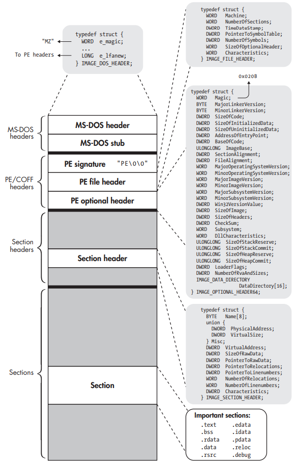

4 minutes
The PE Format
- PE is a modified version of the Common Object File Format (COFF), thus also referred to as PE/COFF.
- The 64-bit version of PE is called PE32+.
- The structure is defined in WinNT.h, which is included in the Microsoft Windows Software Developer Kit.
 PE32+ binary structure.
- An MS-DOS header is included for backward compatibility. Thus it can also be interpreted as an MS-DOS binary.
- The main function of the MS-DOS header is to describe how to load and execute an MS-DOS stub, which comes right after the MSDOS header. This stub is usually just a small MS-DOS program, which is run instead of the main program when the user executes a PE binary in MSDOS. The MS-DOS stub program typically prints a string like “This program cannot be run in DOS mode” and then exits. However, in principle, it can be a full-fledged MS-DOS version of the program.
- The MS-DOS header starts with a magic value, which consists of the ASCII characters MZ. For this reason, it’s also sometimes referred to as an MZ header.
- The field e_lfanew contains the file offset at which the real PE binary begins. Thus, when a PE-aware program loader opens the binary, it can read the MS-DOS header and then skip past it and the MS-DOS stub to go right to the start of the PE headers.
Executable Header
The struct IMAGE_NT_HEADERS64 encompasses a 32- bit signature, a PE file header, and a PE optional header. You could say that struct IMAGE_NT_HEADERS64 as a whole is PE’s version of the executable header.
- The PE signature is simply a string containing the ASCII characters PE, followed by two NULL characters. It’s analogous to the magic bytes in the e_ident field in ELF’s executable header.
- The file header describes general properties of the file. The most important fields are Machine, NumberOfSections, SizeOfOptionalHeader, and Characteristics.
- The PE optional header provides metadata. It may be missing in object files.
Section Header Table
- An array of IMAGE_SECTION_HEADER structures, each of which describes a single section, denoting its size in the file and in memory (SizeOfRawData and VirtualSize), its file offset and virtual address (PointerToRawData and VirtualAddress), relocation information, and any flags (Characteristics).
- The flags describe whether the section is executable, readable, writable, or some combination of these.
- Instead of referring to a string table as the ELF section headers do, PE section headers specify the section name using a simple character array field, aptly called Name. Because the array is only 8 bytes long, PE section names are limited to 8 characters.
- PE format does not explicitly distinguish between sections and segments. The closest thing PE files have to ELF’s execution view is the DataDirectory, which provides the loader with a shortcut to certain portions of the binary needed for setting up the execution.
- There is no separate program header table; the section header table is used for both linking and loading.
Sections
Many of the sections in PE files are directly comparable to ELF sections, often even having (almost) the same name.
- The .idata section specifies which symbols (functions and data) the binary imports from shared libraries, or DLLs in Windows terminology.
- The .edata section lists the symbols and their addresses that the binary exports.
- To resolve references to external symbols, the loader needs to match up the required imports with the export table of the DLL that provides the required symbols.
- In practice, you may find that the .idata and .edata sections are merged into .rdata, but their contents and workings remain the same.
- When the loader resolves dependencies, it writes the resolved addresses into the Import Address Table (IAT). Similar to the Global Offset Table in ELF, the IAT is simply a table of resolved pointers with one slot per pointer.
- The IAT is also part of the .idata section, and it initially contains pointers to the names or identifying numbers of the symbols to be imported.
- The dynamic loader then replaces these pointers with pointers to the actual imported functions or variables. A call to a library function is then implemented as a call to a thunk for that function, which is nothing more than an indirect jump through the IAT slot for the function.
Citation: Practical Binary Analysis.